k-Day 055｜入會儀式
下一個城鎮滿都拉圖在110公里外，相當保守的拆成三天進行，距離的分配方式是按照地圖上能找到的遮蔽物決定的。
第一個扎營點是位於30公里外，草原中的廢棄景區。理想狀態當然希望原本提供住宿的蒙古包能進去，若是門窗都被鎖上，至少有面牆幫帳篷擋點風就十分感恩了。
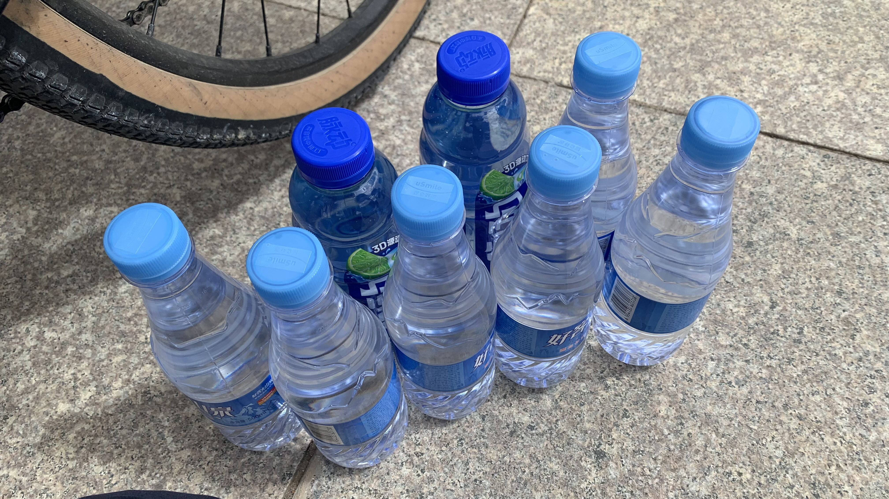
回到國道上，在加油站買了3公升的水，以及1.8公升的運動飲料。兩天應該足夠了。
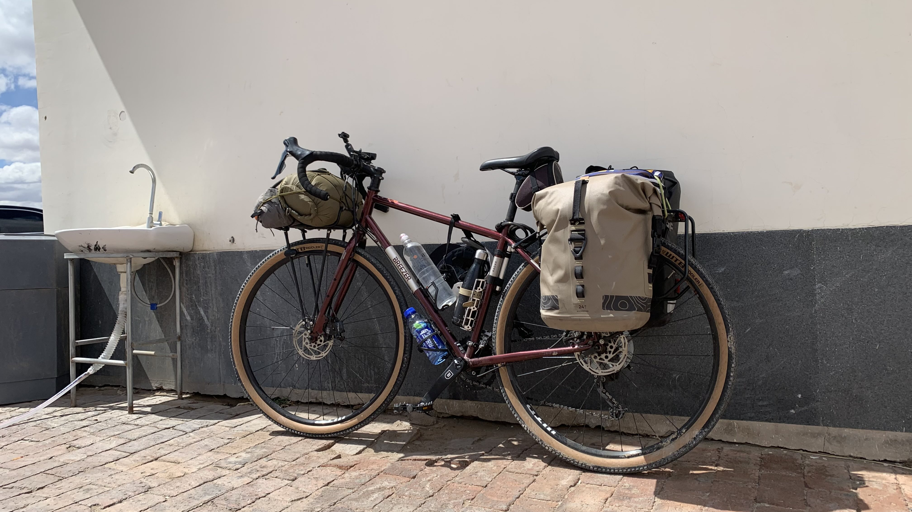
二十三號好久沒出門，背上行李後在陽光下顯得相當耀眼。
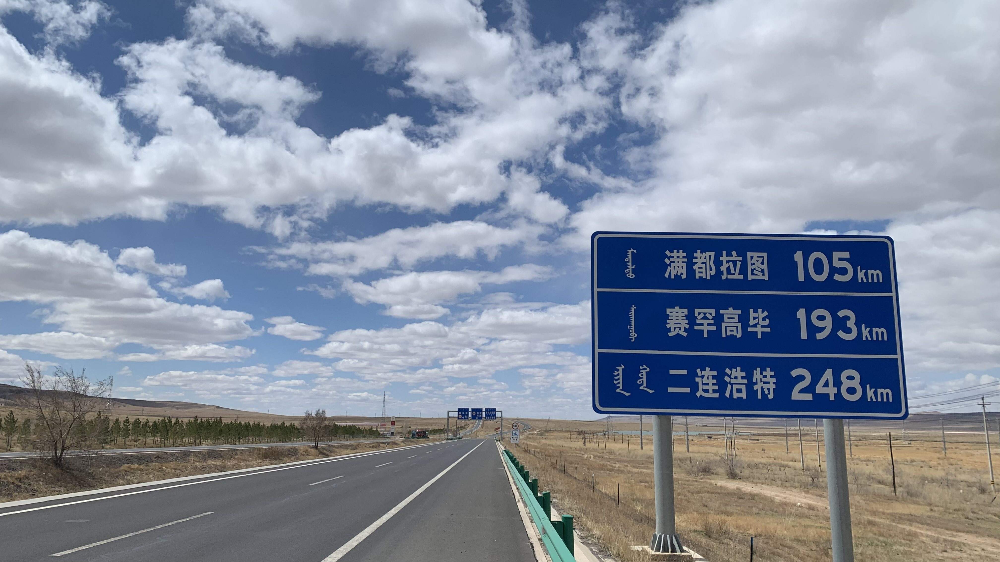
距離二連浩特還有248公里，正常狀態下三四天就能到，以現在的膝蓋狀態只能咬牙推進。
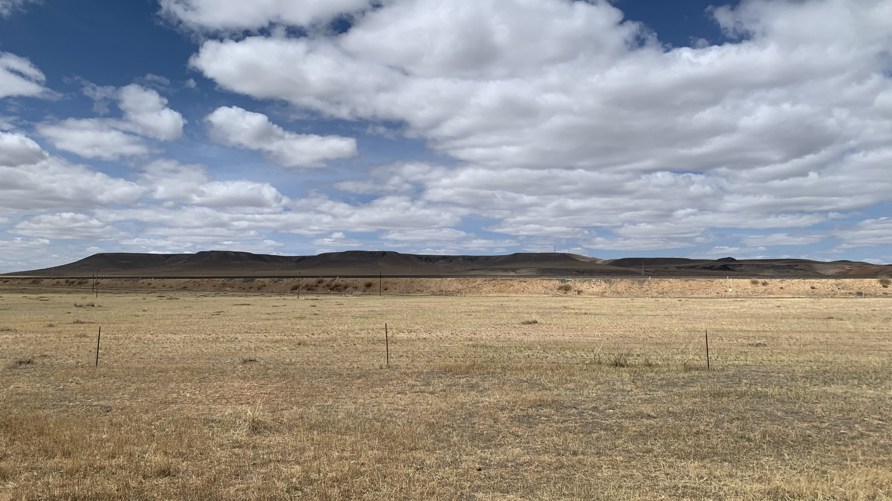
遠處出現一座上方貌似相當平坦的高地，相當奇特。
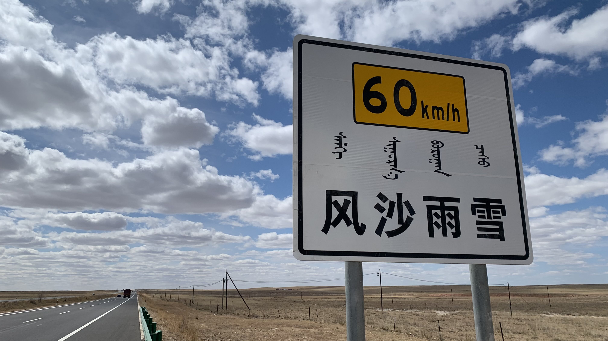
第一次看到寫著「風沙雨雪」的告示牌，前面三個都在這條國道上享受過了，雪的部分也許冬天再來一次？
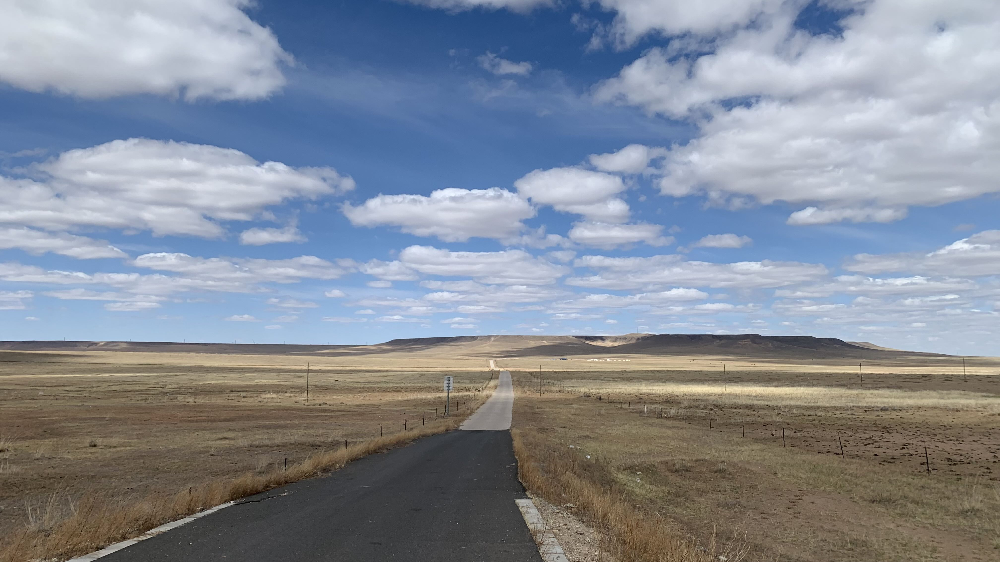
真的好美啊！雖然膝蓋仍在抽痛，看到這條小路還是忍不住往前方的山騎了一小段。
今天出發10公里左右就感覺到左右兩邊的膝蓋都隱隱作痛，停在公路道班的圍牆邊擋風，將椅墊又往後移了一些，感覺膝蓋空間開闊了不少。
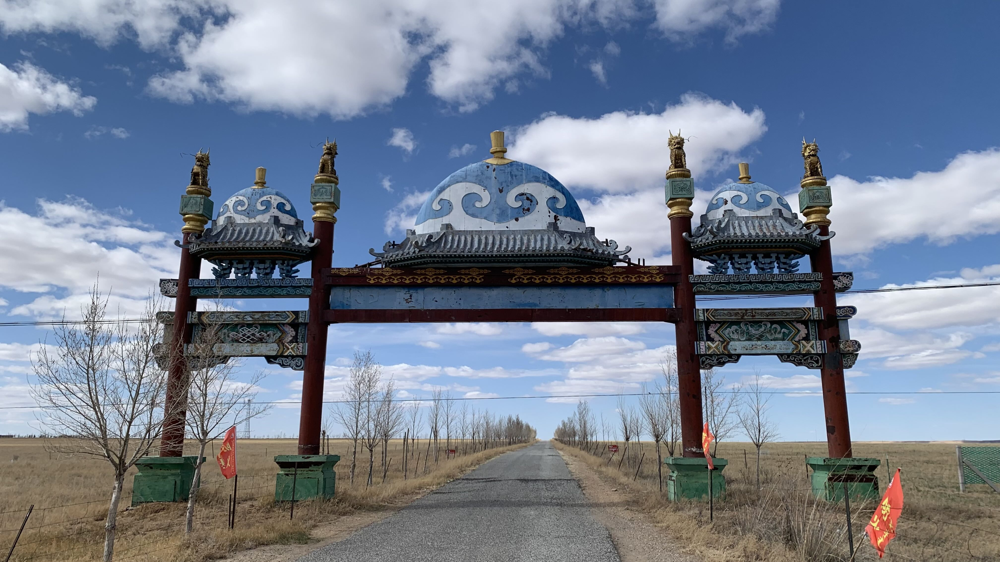
很快的兩點多就抵達疑似今日住處的牌樓，往草原中騎1、2公里就是景區了。
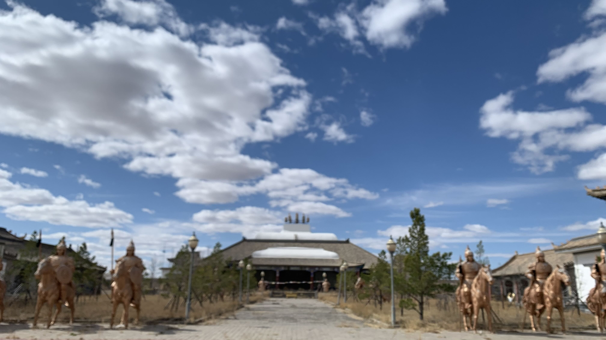
沒料到會是這麼大陣仗，四周只有風聲和木門被風吹地搖動的聲音，心裡有些發毛。
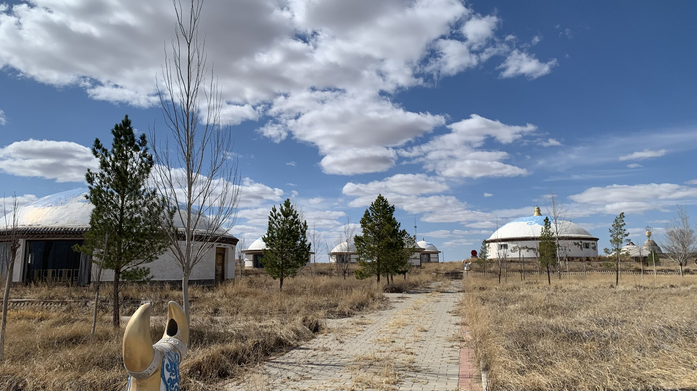
蒙古包的門都鎖上了，只好回到雕像圍繞的詭異建築查看。
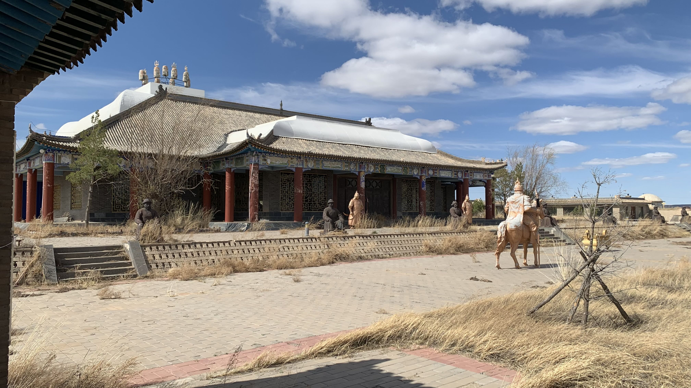
其中有幾個玻璃被砸破，鎖被破壞的房間，牽著二十三號怕扎破輪胎，不適宜靠近。遊客中心的門也被打開，門邊躺著一隻內臟和肉被吃光，剩下外皮和骨架的鳥。想起這兩天看到一隻沙狐叼著捕獲的獵物大搖大擺過馬路，此處也許有其他動物棲居。
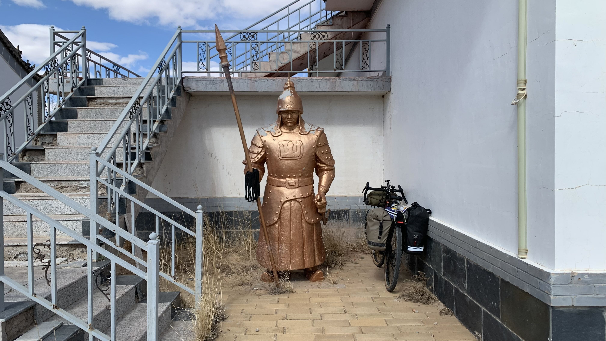
回到入口處，思考睡在二樓也許更恰當，將二十三號停在守衛旁。
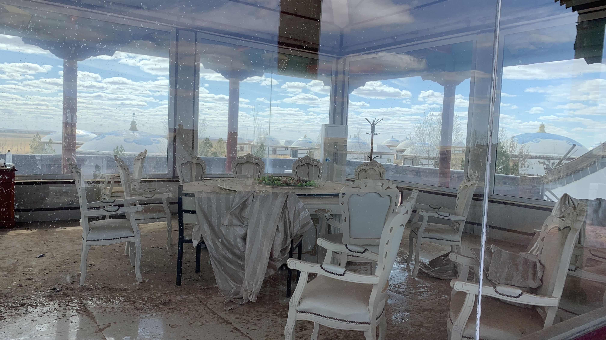
樓上原本應該是景觀餐廳，現在也封起來了。
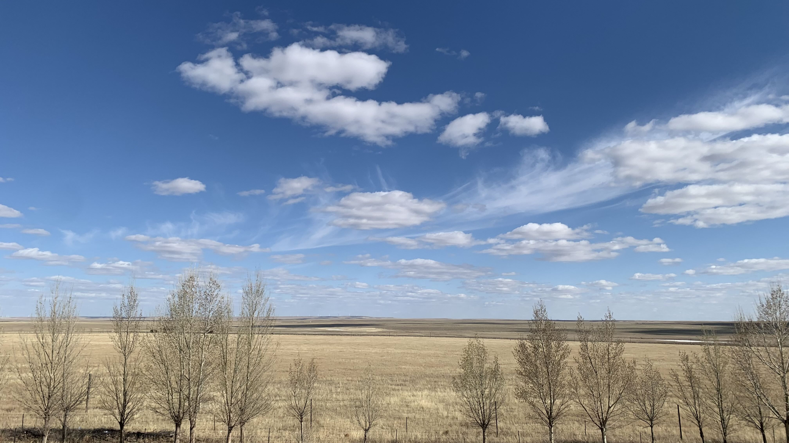
這就是古代守城門的視野嗎？百里外的動靜都一覽無遺。
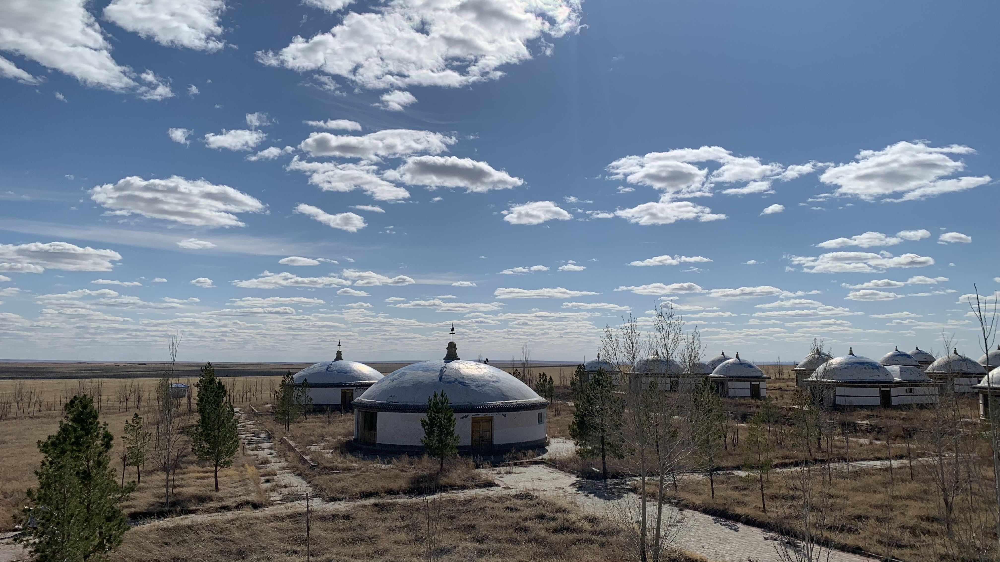
今晚就決定睡在這裡，除了風大沒有其他缺點。
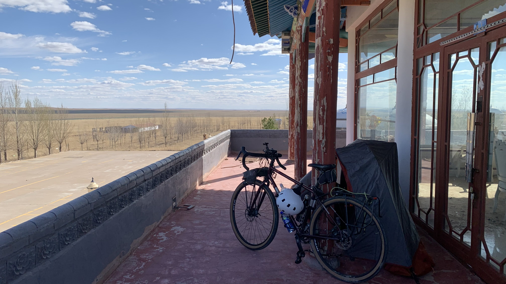
這裡的天空暗得很晚，直到七點多夕陽才逐漸西下，確認再也沒有其它車輛進來上廁所探險，於是安心地鑽進帳篷開始煮食。
約莫九點半，東南方的下風處傳來陣陣淒厲的嚎叫。聲音越來越近，似乎已進入廢墟範圍，是長期住戶還是被晚餐巧克力派的氣味吸引來的？
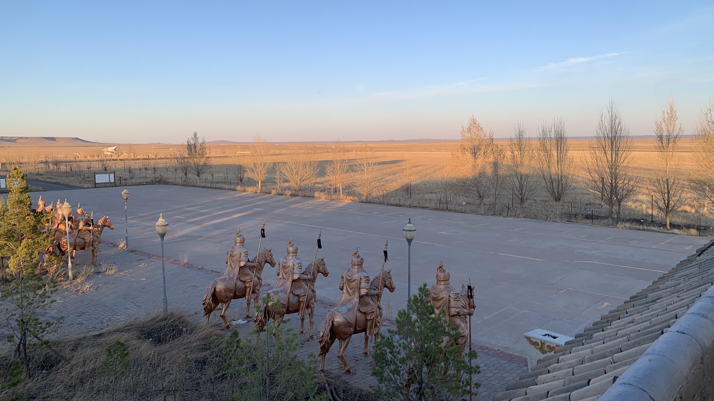
不敢發出聲音，翻身抓住手機後就一直保持平板支撐的姿勢。叫聲持續了5分多鐘，我的核心和雙手已開始抽蓄。大哥，不要再叫了，我不是把樓下讓給你了嗎？你可千萬不要帶朋友上來啊！
風聲擊打著外帳，屋頂上方鳥巢中的鳥也開始撲翅，疑似是沙狐的聲音才消失不久，南方又傳來低沉的嗚嗚聲。千萬不要有野狗啊！這是什麼草原入會儀式嗎？
一切可以用來當作兵器的設備都在帳篷外，只好一手抓住求生哨，一手抓住手機。用最低調的方式翻過身，睡袋和睡墊發出的噪音在無聲的草原上無異於雷雨。正當我想著要不要把定位傳出去，至少可以讓大家找到我的屍體時，不知怎麼的就睡著了。
今日花費： 飲水＋咖啡 36元